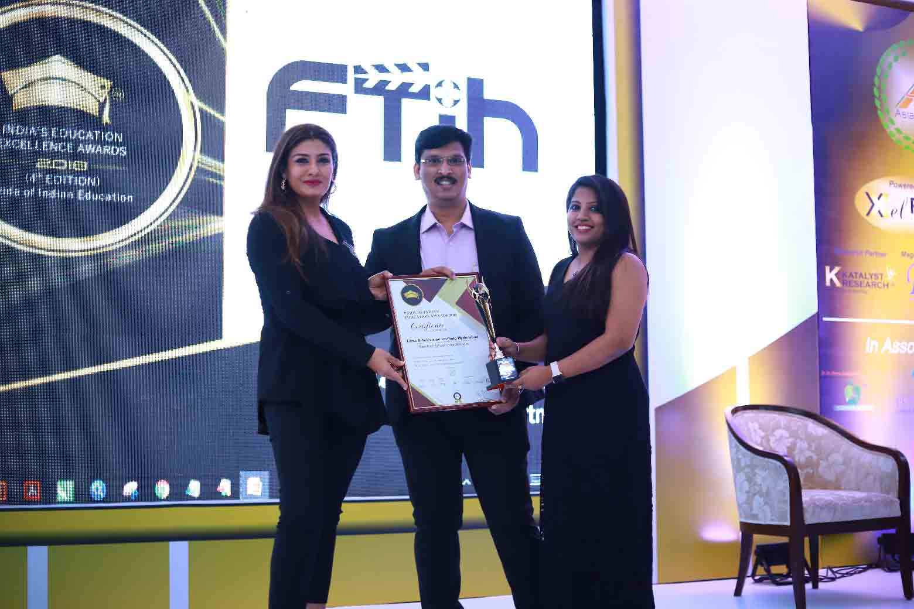

The creative, technical and industry preferred tools shall be explored by the students with our Extensive Infrastructure, we are here to take a step forward and provide education in all streams of Media.

The creative, technical and industry preferred tools shall be explored by the students with our Extensive Infrastructure, we are here to take a step forward and provide education in all streams of Media.
FTIH was in the form of IMPART MULTIMEDIA EDUCATION since 2007. It was established on a belief that a top quality education should be accessible to anyone who has passion for MULTIMEDIA. With handful achievements in Multimedia, the Board of Directors and Committee members decided to take a step forward and provide education in all streams of Media. And so the Title has been refined to FILM AND TELEVISION INSTITUTE OF HYDERABAD-FTIH.
PROFESSIONAL COURSE
• Direction, Cinematography & Photography, Acting, Anchoring and Script Writing are some of the professional courses offered to the students who are passionate about Film Industry.
TECHNICAL COURSE
• Graphic Designing, Web Designing, Film & TV Editing, Animation and VFX are some of the Technical Courses which are creative knowledge oriented Fields.
JOB ORIENTED COURSE
There are some short term courses which have immediate solution for the survival and also fast duration programmed less than 3 months.